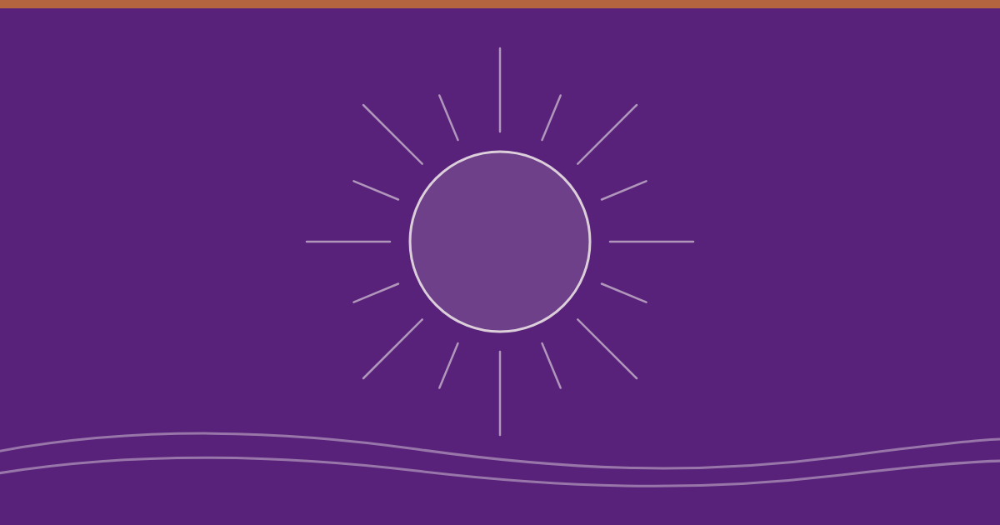

¿Qué es Un Curso de Milagros?

Imagina que pasas la vida lidiando con un ruido de fondo constante: ansiedad por el futuro, resentimientos que pesan, sensación de carencia o la extraña certeza de que, por más que logres, falta algo.
¿Se parece eso a tu vida?
Un Curso de Milagros (UCDM) no es una religión, ni una doctrina dogmática, ni un llamado a adorar a nadie. Es un entrenamiento mental sistemático diseñado para hacer una sola cosa: sustituir el sistema de pensamiento del miedo, o llamado también sistema de pensamiento del ego, por el sistema de pensamiento del amor.
En esencia: es un mapa psicológico y espiritual que afirma que tú no eres víctima del mundo que ves, porque tu mente está proyectando lo que crees ser. Cambia la mente, y el mundo —tu experiencia de él— se transforma.
¿Cómo está estructurado?
El Texto
La teoría. Desmonta la lógica del ego, basada en el ataque, la culpa y la separación, y expone la metafísica del perdón.
El Libro de Ejercicios
La práctica. 365 lecciones, una al día, para reeducar la percepción en la vida cotidiana. No requiere fe, solo disposición a hacer el ejercicio.
El Manual para el Maestro
Respuestas prácticas y una redefinición de lo que significa enseñar, que es, simplemente, aprender de nuevo.
¿Qué no es UCDM?
- No es pensamiento sugestivo ni optimismo desenfrenado («puedes con todo»). No niega el dolor; te enseña a mirarlo desde otro lugar para desarmarlo.
- No requiere apartarse del mundo. Se aplica en la fila del supermercado, en tu trabajo, en una discusión de pareja o ante una crisis financiera.
Su enunciado y axioma principal se resume en esta frase:
«Nada real puede ser amenazado. Nada irreal existe. En esto radica la paz de Dios.» Un Curso de Milagros, Introducción